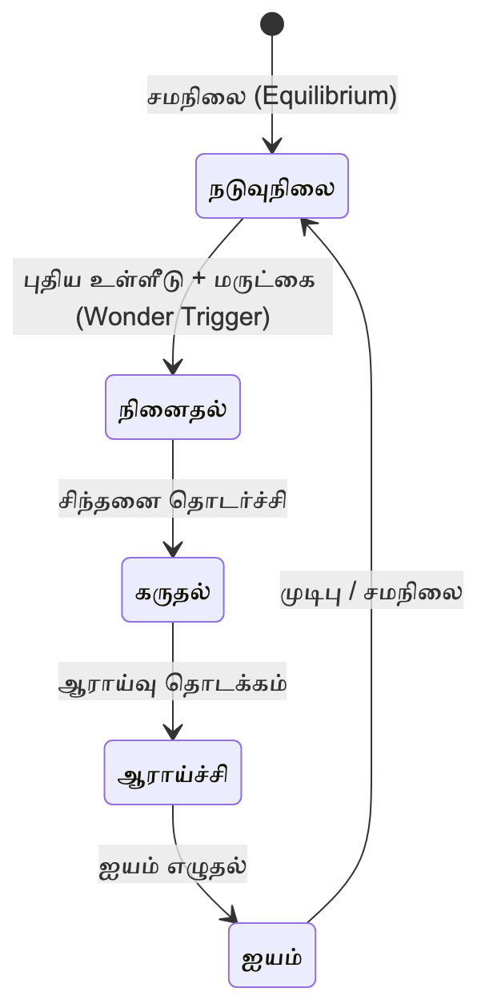
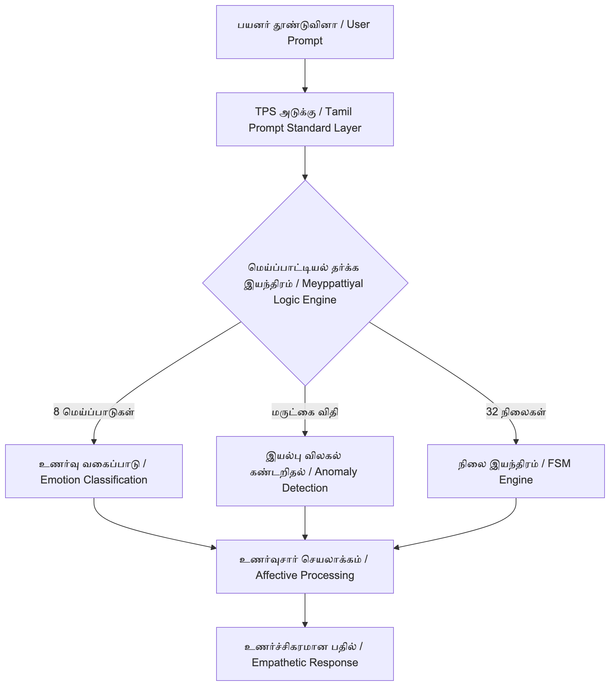

செய்யறிவும் செம்மொழியும்: மெய்ப்பாட்டியல் மற்றும் உணர்வுக் கண்டறிதல் தொழில்நுட்பங்களின் இணை வளர்ச்சிப் பார்வை
AI and Classical Language: A Parallel Development Perspective on Meyppaattiyal and Emotion Detection
ஆசிரியர்: காங்கேயன் பசுபதி (Kangeyan Passoubady)
குறிப்பு எண்: தொ.மா.2098
ஆய்வுச் சுருக்கம்
தொல்காப்பியம் பொருளதிகாரத்தின் "மெய்ப்பாட்டியல்" எனும் பகுதி, மனித உணர்வுகளை அறிவியல் நெறிமுறையில் வகைப்படுத்தி, அவை உடல் வழியாக வெளிப்படுவதை ஒரு தரவுச் செயல்பாடாக வரையறுக்கிறது. "பொருட்புறத்து அன்றி மெய்ப்புறத் தோன்றிப் பொருளைப் புலப்படுத்துவது மெய்ப்பாடாகும்" (வெள்ளைவாரணர், 1994, பக். 156) என்னும் விளக்கம், அக நிலை (Internal State) புற உடல் வழியாகத் தரவுப்புள்ளிகளாக வெளிப்படுகிறது என்னும் கொள்கையை நிறுவுகிறது. இக்கோட்பாடு, நவீனச் செய்யறிவின் (Artificial Intelligence, AI) உணர்வுசார் கணினியியல் (Affective Computing), முகபாவ அங்கீகாரம் (Facial Expression Recognition), இயல்பு விலகல் கண்டறிதல் (Anomaly Detection) ஆகிய துறைகளுடன் இணை வளர்ச்சிப் பார்வையில் (Parallel Development Perspective) ஒப்பிடத்தக்க கட்டமைப்பு ஒற்றுமையைக் கொண்டுள்ளது.
இக்கட்டுரை மூன்று இணை வளர்ச்சி ஒப்புமைகளை முன்வைக்கிறது: எண்வகை மெய்ப்பாடுகளுக்கும் பால் ஏக்மனின் அடிப்படை உணர்வுக் கோட்பாட்டுக்கும்; "மருட்கை" உணர்வுக்கும் இயல்பு விலகல் கண்டறிதலுக்கும்; 32 நிலைகளுக்கும் நிலை இயந்திர (Finite State Machine, FSM) மாதிரிக்கும். "நேரடிச் சமன்பாடு" கூற்றைத் தவிர்த்து, "இணை வளர்ச்சி" மற்றும் "ஒப்பிடத்தக்க கருத்துருவாக்கம்" (Comparable Conceptualization) என்னும் கல்விப்புல நெறிமுறையில் இவ்வாய்வு அமைக்கப்பட்டுள்ளது. முந்தைய ஆய்வுகள் (Paranjpe, 2009; Kavitha, 2020; Porkai Athirai, 2021) மெய்ப்பாட்டியலை இலக்கிய, அழகியல், தத்துவ கண்ணோட்டங்களில் அணுகியுள்ளன; இக்கட்டுரையின் தனிப்பட்ட பங்களிப்பாக, மெய்ப்பாட்டியலை ஒரு கணிப்பொறித் தரவு மாதிரியாக்கமாகக் (Data Modeling) கருதி, முகச்செயல் குறியீட்டு முறைமை (FACS), இயல்பு விலகல் கண்டறிதல், நிலை இயந்திரம் (FSM) ஆகிய மூன்று நவீன AI நுட்பங்களுடன் ஒருங்கிணைந்து வரைபடுத்தப்படுகிறது.
திறவுச்சொற்கள்: மெய்ப்பாட்டியல், செய்யறிவு, உணர்வுசார் கணினியியல், இயல்பு விலகல் கண்டறிதல், நிலை இயந்திரம், இணை வளர்ச்சி.
1. முன்னுரை
தமிழ் அறிவு மரபின் அடித்தளமான தொல்காப்பியம், மொழியியல் இலக்கணத்தைத் தாண்டி வாழ்வியலையும் அறிவியல் நுட்பங்களையும் தன்னுள் கொண்டுள்ளது. குறிப்பாக மெய்ப்பாட்டியல், உள்ளத்து நிகழும் குறிப்புகள் மெய்க்கண் தோன்றுவதே மெய்ப்பாடு என்னும் அகப்புற இணைப்பின் (Inner-Outer Coupling) கொள்கையை முன்வைக்கிறது.
இன்றைய தொழில்நுட்ப உலகில், ஓர் இயந்திரம் மனித உணர்வுகளைப் புரிந்துகொள்வது (Emotion Detection) செய்யறிவின் முதன்மைச் சவால்களில் ஒன்றாக உள்ளது. பிக்கார்டின் Affective Computing (1997) நூல் முதல், ஏக்மன்-ஃபிரீசன் ஆகியோரின் முகச்செயல் குறியீட்டு முறைமை (Facial Action Coding System, FACS) வரையிலான மேலைநாட்டு ஆய்வுகள் இத்துறையில் முன்னேறியுள்ளன. இவற்றுக்கு ஒத்த தத்துவக் கட்டமைப்பை, சுமார் இரண்டாயிரம் ஆண்டுகளுக்கு முன்பே தொல்காப்பியம் தனியான இணை வளர்ச்சியில் உருவாக்கியுள்ளது. இக்கட்டுரை, அத்தத்துவ அடித்தளத்தை நவீன அறிவியல் சொல்லாடலில் வகைப்படுத்தி, மெய்ப்பாட்டியலின் கணினியியல் சார்ந்த கருத்தாக்க ஆற்றலை நிறுவ முயல்கிறது.
2. நோக்கம்
இக்கட்டுரையின் முதன்மை நோக்கங்கள்: (1) தொல்காப்பிய மெய்ப்பாட்டியலின் கருத்தாக்கச் சட்டகத்தை (Conceptual Framework) நவீன கணினியியல் சொல்லாடலில் முறையாக வரைபடுத்துதல் (Mapping); (2) எண்வகை மெய்ப்பாடுகள், மருட்கை, 32 நிலைகள் ஆகிய மூன்று கூறுகளுக்கும் நவீன AI நுட்பங்களுக்கும் இடையிலான ஒப்புமைகளை "இணை வளர்ச்சி" நெறிமுறையின் கீழ் நிறுவுதல்; (3) மெய்ப்பாட்டியலை அடிப்படையாகக் கொண்டு, ஓர் உணர்வுசார் செய்யறிவு மாதிரியின் (Affective AI Model) ஆரம்ப கட்டமைப்புத் திட்டத்தை (Initial Architectural Sketch) முன்வைத்தல்.
3. பயன்
"தொல்காப்பியத்தை ஏன் கற்க, கற்பிக்க, கொண்டாட, பரவலாக்க வேண்டும்?" என்னும் வினாவுக்கான ஓர் அறிவியல் சார் விடையை இக்கட்டுரை முன்வைக்கிறது.
3.1 அறிவியல் தாக்கம்
மெய்ப்பாட்டியலின் கட்டமைப்பு, இன்றைய உணர்வுசார் கணினியியலின் வகைப்பாட்டுக் கட்டமைப்புடன் ஒப்பிடத்தக்க மாற்றுக் கருத்தாக்க மாதிரியாக (Alternative Conceptual Model) அமையக்கூடியது; இது உலகளாவிய கல்விப்புலத்துக்கு தமிழ் அறிவு மரபின் அறிவியல் ஆற்றலை வெளிப்படுத்தும்.
3.2 மொழி வளர்ச்சி
"செய்யறிவு" (AI), "தூண்டுவினா" (Prompt), "மதி மயக்கம்" (Hallucination) போன்ற தரப்படுத்தப்பட்ட தமிழ்க் கலைச்சொற்களைப் பயன்படுத்துவதன் வழியாக, தமிழை நவீன அறிவியல் மொழியாக வளர்க்கும் பாதையை இக்கட்டுரை வலுப்படுத்துகிறது.
3.3 இளம் தலைமுறைக்கான தொடர்பு
மெய்ப்பாட்டியலை இளம் கணினியியல் ஆர்வலர்கள் ஒரு தத்துவார்த்த வடிவமைப்பு வழிகாட்டியாகக் (Theoretical Design Guideline) கருதும் வாய்ப்பை இக்கட்டுரை திறக்கிறது.
4. ஆய்வியல் நெறிமுறை
இக்கட்டுரை ஒப்பீட்டு ஆய்வியலையும் (Comparative Methodology) இணை வளர்ச்சி நெறிமுறையையும் அடிப்படையாகக் கொண்டுள்ளது. மூலமாக, மெய்ப்பாட்டியலின் 27 நூற்பாக்கள் (தொல்காப்பியம், பொருளதிகாரம்: மெய்ப்பாட்டியல், புலியூர்க் கேசிகன் உரைப் பதிப்பு, 1961; நூற்பா 1192-1218, மொத்தம் 1610 வரிசையில்) மற்றும் இளம்பூரணர், வெள்ளைவாரணர் உரைகள் பயன்படுத்தப்பட்டன. நவீன ஆதாரங்களாக பிக்கார்டின் Affective Computing (1997), சாந்தோலா முதலியோரின் Anomaly Detection: A Survey (2009), ஏக்மன்-ஃபிரீசனின் Facial Action Coding System (1978), கிரிங்கின் FACES User's Guide (2023) நாடப்பட்டன. தொல்காப்பியமும் நவீன அறிவியலும் வேறுபட்ட அறிவுச் சூழல்களைக் கொண்டவை என்பதால், "ஒன்றே தான்" எனும் சமன்பாட்டைத் தவிர்த்து, கட்டமைப்பு ஒற்றுமைகளை (Structural Similarities) மட்டுமே இவ்வாய்வு அடையாளம் காண்கிறது.
5. உட்தலைப்புகள்
5.1 எண்வகை மெய்ப்பாடுகளும் முகபாவ அங்கீகாரமும்
தொல்காப்பியர் "நகையே அழுகை இளிவரல் மருட்கை / அச்சம் பெருமிதம் வெகுளி உவகை என்று / அப் பால் எட்டே மெய்ப்பாடு என்ப" (தொல். பொ. 1194) என்னும் நூற்பாவில் எட்டு அடிப்படை உணர்வுகளை வகைப்படுத்துகிறார். இவ்வகைப்பாடு, பால் ஏக்மனின் ஆறு அடிப்படை உணர்வுக் கோட்பாட்டுடன் (Ekman, 1992) ஒப்பிடத்தக்க கருத்துருவாக்கத்தைக் கொண்டுள்ளது.
| தொல்காப்பிய மெய்ப்பாடு | ஏக்மன் அடிப்படை உணர்வு | முகபாவக் குறியீடு (FACS AU) |
|---|---|---|
| நகை | Happiness / Joy | AU6 + AU12 |
| அழுகை | Sadness | AU1 + AU4 + AU15 |
| இளிவரல் | Disgust / Contempt | AU9 / AU14 (asymmetric) |
| மருட்கை | Surprise | AU1 + AU2 + AU5 + AU26 |
| அச்சம் | Fear | AU1 + AU2 + AU4 + AU5 + AU20 |
| பெருமிதம் | Pride / (extended) | AU12 + head tilt |
| வெகுளி | Anger | AU4 + AU5 + AU7 + AU23 |
| உவகை | Joy / Elation | AU6 + AU12 (intensified) |
அட்டவணை 1. தொல்காப்பிய எண்வகை மெய்ப்பாடுகளும் ஏக்மன் அடிப்படை உணர்வுகளும் FACS தசை இயக்கக் குறியீடுகளும்: ஒப்பிடத்தக்க வரைபடுத்தல். முழு FACS Action Unit விவரம் ஏக்மன்-ஃபிரீசன் (1978) நூலில் காண்க.
தொல்காப்பியம் உடல் வெளிப்பாடுகளை மெய்ப்பாடுகளாகக் கொள்வதும், ஏக்மனின் FACS தசை இயக்கங்களைக் குறியீடாக்குவதும் "உள் நிலை, புற வெளிப்பாடு" என்னும் ஒரே ஏரண மாதிரியை (Logical Schema) பின்பற்றுகின்றன. இது கட்டமைப்பு மட்ட ஒற்றுமை; நேரடிச் சமன்பாடு அன்று.
5.2 மருட்கையும் இயல்பு விலகல் கண்டறிதலும்
"புதுமை பெருமை சிறுமை ஆக்கமொடு / மதிமை சாலா மருட்கை நான்கே" (தொல். பொ. 1198) என்னும் நூற்பாவில் மருட்கை (வியப்பு) தோன்றுவதற்கான நான்கு காரணிகள் வரையறுக்கப்படுகின்றன: புதுமை, பெருமை, சிறுமை, ஆக்கம். இவை மனம் தனது முன் அனுபவத்துக்கு (Prior Distribution) வெளியில் ஒரு தரவைச் சந்திக்கும்போது தோன்றும் இயல்பான உணர்வு வினை (Cognitive Reaction). சாந்தோலா, பானர்ஜீ, குமார் தம் Anomaly Detection: A Survey (2009) ஆய்வில் இயல்பு விலகல் கண்டறிதலை புள்ளி (Point), சூழல்சார் (Contextual), கூட்டு (Collective) என மூன்று வகைகளாகப் பகுக்கின்றனர்.
| மருட்கைக் காரணி | Anomaly வகை | விளக்கம் |
|---|---|---|
| புதுமை (Novelty) | Point Anomaly | முற்றிலும் புதிய ஒற்றை நிகழ்வு |
| பெருமை (Magnitude) | Contextual Anomaly (high-tail) | சூழலின் இயல்பு மீறிய பெருமை |
| சிறுமை (Smallness) | Contextual Anomaly (low-tail) | சூழலின் இயல்பு மீறிய குறுமை |
| ஆக்கம் (Generative Force) | Collective Anomaly | இணைந்த, புதிய தாக்கத்தை உருவாக்கும் தொடர்நிகழ்வு |
அட்டவணை 2. நான்கு மருட்கைக் காரணிகளுக்கும் சாந்தோலா முதலியோர் (2009) வரையறுத்த இயல்பு விலகல் வகைகளுக்கும் இடையிலான கருத்துருவாக்க இணை.
தொல்காப்பியர் மனிதனின் உள்ளுணர்வு ரீதியான வியப்புக் காரணிகளை வகைப்படுத்தினார்; சாந்தோலா முதலியோர் கணினி சார் தரவு ரீதியான விலகல்களை (Statistical Deviations) வகைப்படுத்தினர். இரு கட்டமைப்புகளும் ஒரே ஏரண இணையில் (Cognitive ↔ Computational) இயங்குகின்றன. இது இணை வளர்ச்சியின் சிறந்த எடுத்துக்காட்டு.
5.3 நிலைகளும் நிலை இயந்திர மாதிரியாக்கமும்
"பண்ணைத் தோன்றிய எண் நான்கு பொருளும் / கண்ணிய புறனே நால் நான்கு என்ப" (தொல். பொ. 1192) என்னும் தொடக்க நூற்பாவில் இருந்து தொல்காப்பியர் 32 நிலைகளை வரையறுக்கிறார் (முழுப் பட்டியல்: தொல். பொ. 1203). இவை மனத்தின் இயக்கச் சுழற்சியை (Cognitive Cycle) விரிவாக மாதிரியாக்கம் செய்கின்றன. ஒரு நிலை இயந்திரம் (FSM) என்பது, குறிப்பிட்ட தூண்டுதல்களுக்கு (Triggers) ஏற்ப ஒரு கணினி அமைப்பு நிலைகளுக்கு இடையே மாற்றமடையும் கருவி. மெய்ப்பாட்டியலின் "நினைதல், ஆராய்ச்சி, நடுவுநிலை" போன்ற தொடர்நிலைகள் FSM நிலை மாற்றங்களுக்கு (state transitions) கட்டமைப்பு ஒப்புமை கொண்டவை.

வரைபடம் 1. மருட்கை என்னும் மெய்ப்பாட்டுத் தூண்டல், மனத்தை நடுவுநிலை → நினைதல் → கருதல் → ஆராய்ச்சி → ஐயம் வழியாக மீண்டும் சமநிலைக்கு நகர்த்தும் சுழற்சியை FSM ஆக மாதிரியாக்கம் செய்தல். வரைபடத்திலுள்ள ஐந்து நிலைகளும் தொல். பொ. 1203-இல் அடங்கியவை; "புதிய உள்ளீடு + மருட்கை" நிலை அன்று, தூண்டல் மட்டுமே.
5.3.1 நிலைகளின் வகைப்பாடு
5.3.1.1 உடல் / சூழல்சார் (Physical / Situational, 12)
இக்குழுவில் அடங்கும் பன்னிரு நிலைகள்: 1. உடைமை (Possession), 3. நடுவுநிலை (Neutrality), 5. தன்மை (Self-state), 6. அடக்கம் (Restraint), 7. வரைதல் (Abstention), 14. துஞ்சல் (Sleep), 19. வெரூஉதல் (Trembling), 20. மடிமை (Indolence), 23. விரைவு (Haste), 24. உயிர்ப்பு (Aliveness), 29. வியர்த்தல் (Sweating), 32. நடுக்கு (Shivering).
5.3.1.2 உணர்வுசார் (Emotional, 12)
இக்குழுவில் அடங்கும் பன்னிரு நிலைகள்: 2. இன்புறல் (Pleasure), 4. அருளல் (Grace), 8. அன்பு (Love), 9. கைம்மிகல் (Excessive emotion), 10. நலிதல் (Weakening), 12. வாழ்த்தல் (Blessing), 13. நாணுதல் (Modesty), 15. அரற்று (Lamentation), 17. முனிதல் (Displeasure), 25. கையாறு (Grief), 26. இடுக்கண் (Distress), 28. பொறாமை (Envy).
5.3.1.3 அறிவுசார் (Cognitive, 8)
இக்குழுவில் அடங்கும் எண்மர் நிலைகள்: 11. சூழ்ச்சி (Strategy), 16. கனவு (Dream), 18. நினைதல் (Thinking), 21. கருதல் (Consideration), 22. ஆராய்ச்சி (Inquiry), 27. பொச்சாப்பு (Negligence), 30. ஐயம் (Doubt), 31. மிகை (Excess).
குறிப்பு: தொல். பொ. 1203 நூற்பாவில் வரையறுக்கப்பட்ட 32 நிலைகள், FSM மாதிரியாக்கத்துக்கு உகந்த வகையில், மேற்காணும் மூன்று குழுக்களாக (உடல்/சூழல்சார், உணர்வுசார், அறிவுசார்) ஒப்பிடத்தக்க கருத்துருவாக்கம் வழியாகத் தொகுக்கப்பட்டுள்ளன. ஒவ்வொரு நிலைக்கும் முன் காட்டப்பட்ட எண், தொல்காப்பிய நூற்பா வரிசையில் (1-32) அதன் இடத்தைக் குறிக்கிறது. இக்குழுக்களாக்கம் கட்டுரையாசிரியரின் முன்மொழிவு; தொல்காப்பியர் இவ்வாறு தனியாக வகைப்படுத்தவில்லை.
5.4 உணர்வுசார் கணினியியல் கட்டமைப்பும் TPS ஒருங்கிணைப்பும்

வரைபடம் 2. மூன்று நுட்பக் கூறுகளும் (8 மெய்ப்பாடுகள், மருட்கை விதி, 32 நிலைகள்) ஒரே தர்க்க இயந்திரத்தின் உள் கூறுகளாக இணைகின்றன.
மேலே விவாதிக்கப்பட்ட மூன்று இணை வளர்ச்சிகளையும் ஒருங்கிணைத்து, ஓர் ஆரம்ப அமைப்புக் கட்டமைப்பு (Initial System Architecture) முன்மொழியப்படுகிறது.
நடைமுறையில், ஒரு செய்யறிவு அரட்டை இயலி (AI Chatbot) "நகை" மெய்ப்பாட்டைக் (வகைப்பாடு) கண்டறிந்து, "மருட்கை"யை எதிர்பார்க்காத ஓர் உள்ளீட்டுக்காகப் பயன்படுத்தி (இயல்பு விலகல்), பின் "நினைதல் → கருதல் → ஆராய்ச்சி → ஐயம்" எனும் FSM பாதையில் இயங்கி, உணர்வுசார் பதிலை வழங்கும். ஆசிரியரின் தயாரிப்பில் உள்ள தமிழ்த் தூண்டுவினா நெறிக் கட்டமைப்பு (Tamil Prompt Standard, TPS) இக்கட்டமைப்பை நடைமுறைப்படுத்தும் தூண்டுவினா நுட்பமாகச் செயல்படக்கூடியது; உணர்வுத் தூண்டுதல் (Emotional Prompting) மற்றும் நிலைமாற்றத் தூண்டுதல் (State-transition Prompting) ஆகியன அதன் இரு முதன்மை பாதைகள். விரிவான விவரம் Passoubady (தயாரிப்பில்) நூலில் காண்க.
5.5 சவால்களும் எல்லைகளும்
5.5.1 பொருள் மயக்கம் (Conceptual Conflation)
மிகைப்படுத்தப்பட்ட சமன்பாட்டைத் தவிர்க்க, "நேரடிச் சமன்பாடு" தவிர்க்கப்பட்டு "இணை வளர்ச்சி" மட்டுமே பேசப்படுகிறது.
5.5.2 அளவீட்டு எல்லை (Quantification Limit)
மெய்ப்பாட்டியல் ஓர் இலக்கணப் பகுப்பாய்வு, FACS போன்ற அளவீட்டுக் கருவி அன்று; செயற்படுத்தக்கூடிய வழிமுறையாக மாற்றக் கூடுதல் வடிவியல் வேலை (Formalization) தேவை.
5.5.3 பண்பாட்டுச் சார்பு (Cultural Specificity)
மெய்ப்பாடுகளின் வெளிப்பாடு பண்பாடு சார்ந்தது என்பதால், AI மாதிரிகளில் ஒருங்கிணைக்கும்போது பண்பாட்டு உணர்வுச் சாய்வுகளைக் கருத்தில் கொள்ள வேண்டும்.
6. தொகுப்புரை
தொல்காப்பிய மெய்ப்பாட்டியல், மனித உணர்வுகளை அறிவியல் முறையில் வகைப்படுத்தி, அவற்றின் வெளிப்பாடுகளைத் தரவாகக் கருதும் நுட்பமான கருத்தாக்க முறைமை. இக்கட்டுரை மூன்று இணை வளர்ச்சிகளை முறையாக நிறுவியுள்ளது: (1) எண்வகை மெய்ப்பாடுகளுக்கும் ஏக்மனின் அடிப்படை உணர்வுக் கோட்பாட்டுக்கும் இடையிலான கட்டமைப்பு ஒப்புமை, (2) மருட்கைக்கும் இயல்பு விலகல் கண்டறிதலுக்கும் இடையிலான ஏரண இணை, (3) 32 நிலைகளுக்கும் நிலை இயந்திர மாதிரிக்கும் இடையிலான வடிவமைப்பு ஒத்திசைவு. இவ்வொப்புமைகள், இரு வேறு அறிவு மரபுகள் தனித்தனியே ஒரே மனிதச் சிக்கல்களை இணையான ஏரண மாதிரியில் அணுகியுள்ளன என்பதை நிறுவுகின்றன. இது தமிழ் மரபின் கருத்தாக்க ஆற்றலுக்கான ஒப்பிடத்தக்க எடுத்துக்காட்டு. உலகளாவிய கல்விப்புலத்தில் உணர்வுசார் கணினியியல், விளக்கமளிக்கத்தக்க செய்யறிவு (Explainable AI, XAI), பண்பாட்டுச் சார்பு செய்யறிவு (Culturally-aware AI) போன்ற துறைகளில் மெய்ப்பாட்டியல் ஒரு புதிய கோட்பாட்டு உள்ளீட்டைத் (Theoretical Input) தர வல்லது.
7. எதிர்கால ஆய்வுத் திசைகள்
நான்கு திசைகள் முன்மொழியப்படுகின்றன: (1) 32 நிலைகள் அடிப்படையிலான FSM உணர்வுசார் AI மாதிரியின் நடைமுறை செயலாக்கம் (Operational Meyppadu Model); (2) மெய்ப்பாட்டியல் வகைப்பாட்டைத் தரவு குறியீடாகக் (Annotation Schema) கொண்ட தமிழ் முதல் உணர்வுத் தரவுக் கணம் (Tamil-First Dataset); (3) ஆசிரியரின் TPS தரத்துடன் மெய்ப்பாட்டியல் சொல்லாடலை ஒருங்கிணைத்த தூண்டுவினா கட்டமைப்பு (TPS-Meyppadu Integration); (4) மெய்ப்பாட்டியல் வழி "தமிழ்ப் பண்பாட்டுச் சார்பு" உணர்வு AI மாதிரி (Culturally-aware Affective AI). இவை தொல்காப்பியத்தை இளம் தலைமுறையும் பிற மொழியினரும் உலகளாவிய அறிவியல் ஆவணமாகக் கொண்டாடும் வாய்ப்பை நல்கும்.
துணைநூல் பட்டியல்
APA, 7th Edition நடை; ஆசிரியர் பெயர் அகர வரிசையில்.
அ. மூல நூல்களும் உரைகளும்
இளம்பூரணர். (கி.பி. சுமார் 11 ஆம் நூற்றாண்டு). தொல்காப்பியம் பொருளதிகார உரை.
தொல்காப்பியர். தொல்காப்பியம் (தெளிவுரையுடன்): பொருளதிகாரம், மெய்ப்பாட்டியல் (புலியூர்க் கேசிகன் உரை; முதற் பதிப்பு, மே 1961). அருண பப்ளிகேஷன்ஸ், சென்னை-17. நூற்பா 1192-1218 (1610 மொத்த வரிசை).
வெள்ளைவாரணர், க. (1994). தொல்காப்பியம், உரைவளம் (பொருளதிகாரம்). உலகத் தமிழாராய்ச்சி நிறுவனம்.
ஆ. நவீன ஆய்வுக் கட்டுரைகளும் நூல்களும்
Chandola, V., Banerjee, A., & Kumar, V. (2009). Anomaly detection: A survey. ACM Computing Surveys, 41(3), 1-58. https://doi.org/10.1145/1541880.1541882
Ekman, P. (1992). An argument for basic emotions. Cognition and Emotion, 6(3-4), 169-200.
Ekman, P., & Friesen, W. V. (1978). Facial action coding system: A technique for the measurement of facial movement. Consulting Psychologists Press.
Kavitha, J. (2020). Tholkappiyar's Meyppadu (Function of Emotions) and Psychology. International Journal of Tamil Language and Literary Studies, 3(1), 12-27.
Kring, A. M. (2023). The Facial Expression Coding System (FACES): A user's guide. ESI Lab, UC Berkeley.
Paranjpe, A. C. (2009). In defence of an Indian approach to the psychology of emotion. Psychological Studies, 54(2), 100-106.
Passoubady, K. (தயாரிப்பில்). கட்டளைத் தமிழ்: தூண்டுவினா நுட்பம் வடிவமைப்பு புத்தகம் [Unpublished manuscript].
Picard, R. W. (1997). Affective computing. MIT Press.
Porkai Athirai, C. (2021). Tholkappiyar's Meyppadu and Bharathar's Rasa – Concepts of Aesthetics. International Research Journal of Tamil, 3(3), 47-52.